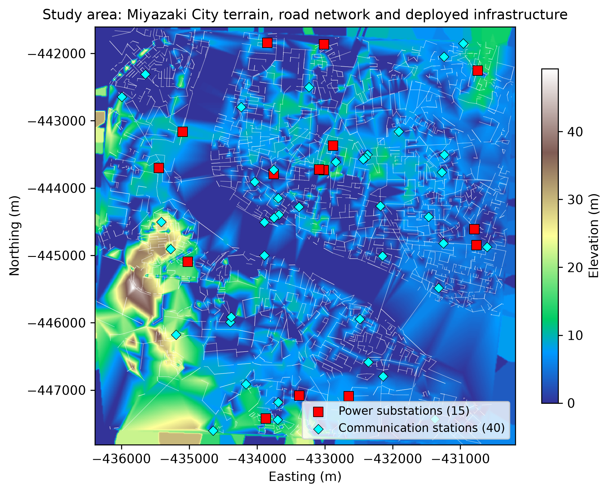
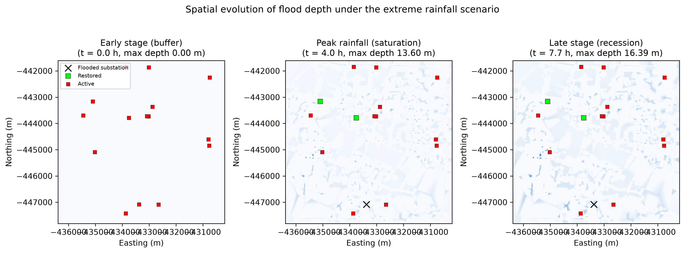
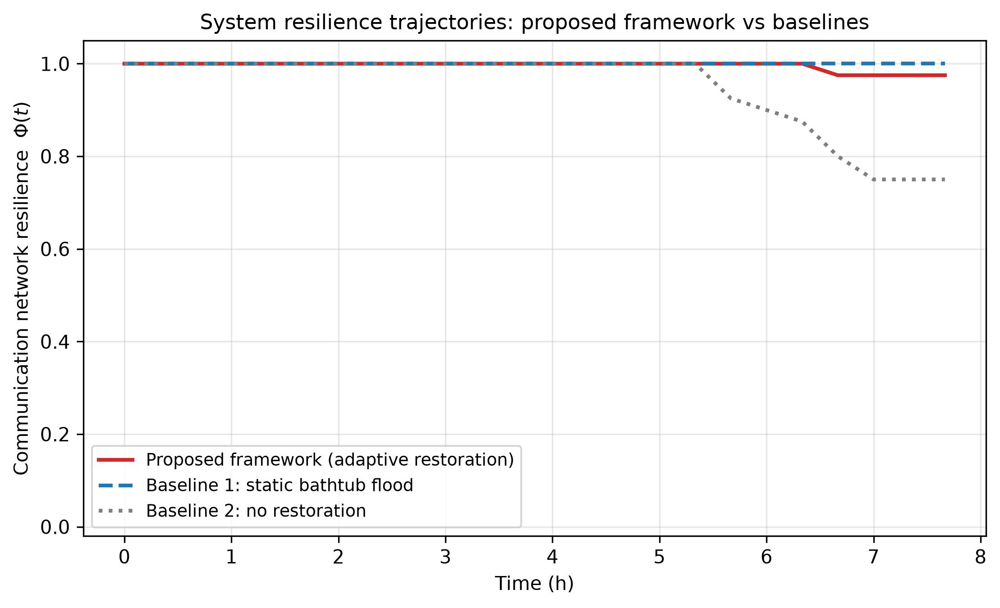
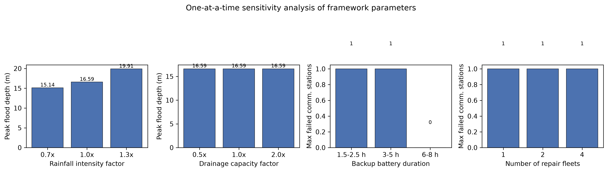

A physics-guided digital twin framework for urban flood resilience assessment.
Terrain-informed CA flood modeling captures nonlinear hazard evolution.
Time-delayed cascading failures emerge from backup-energy depletion.
Adaptive restoration optimization supports flood-constrained recovery decisions.
A Miyazaki City case study validates the framework with sensitivity analysis.
Urban resilience ,Digital twin ,Cellular automata flood simulation ,Interdependent infrastructure networks ,Cascading failures ,Adaptive restoration ,Critical infrastructure protection
Climate change has intensified the frequency and severity of extreme precipitation events, making urban flooding one of the most significant threats to sustainable urban development [1]. Unlike conventional natural hazards that affect isolated components, extreme floods increasingly interact with interconnected urban infrastructure systems, including power supply networks, communication networks, transportation systems, and water management facilities [2]. The increasing dependence among these systems introduces complex failure propagation mechanisms, where localized physical damage can trigger large-scale cascading disruptions across multiple infrastructure domains [3,4].
Critical infrastructure systems (CIS) are characterized by strong physical and functional interdependencies. For example, communication networks rely on continuous power supply, while emergency response activities require functioning transportation systems [5]. Consequently, failures occurring in one infrastructure layer may propagate into other layers through dependency relationships, potentially leading to nonlinear system degradation and prolonged recovery periods [6]. Therefore, accurately evaluating infrastructure resilience requires not only identifying vulnerable components but also reproducing the dynamic interactions among hazards, infrastructure failures, and recovery interventions [7,8].
Existing studies have investigated infrastructure vulnerability and cascading failures from various perspectives. Complex network theory and percolation-based approaches have provided valuable insights into the structural robustness of interdependent networks [4,9,10]. However, many existing models simplify disaster impacts as instantaneous node failures or probabilistic disturbances, without explicitly considering the underlying physical processes that generate infrastructure damage. Such simplifications may result in inaccurate estimation of failure timing and system-level resilience [11].
One major limitation concerns the representation of flood hazards. Many urban flood resilience studies adopt simplified approaches such as bathtub models, uniform water-level assumptions, or distance-based hazard indicators. Although computationally efficient, these approaches neglect the influence of heterogeneous urban topography, surface runoff pathways, and nonlinear drainage limitations [12]. In reality, flood propagation is governed by complex interactions among rainfall intensity, terrain gradients, drainage capacity, and local accumulation processes [13,14]. Without a physically informed hydrodynamic representation, it remains difficult to identify critical transition points where urban flooding rapidly evolves from a manageable condition into a catastrophic state.
Another limitation lies in the temporal characteristics of infrastructure failure. Conventional cascading failure models frequently assume immediate failure propagation after dependency loss [3]. However, practical infrastructure systems often contain redundancy mechanisms that provide temporary operational capability. For instance, communication facilities are commonly equipped with backup batteries or uninterrupted power supply systems. When external power sources fail, these facilities may continue operating for a limited period before complete shutdown [15]. This delayed failure mechanism introduces an important resilience buffer, creating a temporal window for emergency intervention. Nevertheless, the impact of such time-dependent degradation processes remains insufficiently explored in existing interdependent infrastructure models.
Furthermore, many current digital twin and resilience assessment frameworks primarily focus on damage simulation while neglecting the active role of emergency restoration [16–18]. In real disaster scenarios, recovery operations occur within rapidly changing physical environments. Floodwaters may dynamically block transportation networks, alter travel accessibility, and increase response delays [19]. Therefore, emergency dispatch decisions should not rely solely on static road networks or geographical distances. Instead, restoration strategies should incorporate real-time environmental conditions and adaptive routing mechanisms to capture the interaction between disaster evolution and human intervention [20].
To address these limitations, this study develops a high-resolution four-dimensional digital twin framework that integrates physical flood dynamics, infrastructure interdependency, and adaptive restoration processes within a unified simulation environment. The framework combines a terrain-informed cellular automata (CA) flood propagation model with interdependent network failure modeling and dynamic emergency dispatch optimization. Compared with previous studies focusing separately on flood simulation, infrastructure vulnerability, or restoration planning, the proposed approach enables closed-loop analysis of hazard evolution, cascading failures, and recovery actions.
The main contributions of this study are summarized as follows:
High-resolution flood dynamics modeling. A terrain-informed cellular automata flood propagation model is developed using high-resolution elevation data. The model incorporates heterogeneous drainage capacity and subsurface storage limitations to reproduce nonlinear urban flood evolution and identify critical flooding transition points.
Time-delayed cascading failure mechanism. A coupled power–communication infrastructure model is proposed by integrating flood-induced physical damage with backup-battery depletion dynamics. This approach captures delayed failure propagation and reveals the temporal characteristics of cascading disruptions.
Dynamic restoration optimization under flood constraints. A human-in-the-loop restoration mechanism is introduced by coupling flood-dependent road accessibility, dynamic shortest-path routing, and multi-objective emergency prioritization. The proposed strategy evaluates how adaptive interventions influence infrastructure resilience during disaster evolution.
The remainder of this paper is organized as follows. Section 2 reviews related studies on digital twins, flood simulation, infrastructure interdependency, and resilience assessment. Section 3 presents the proposed digital twin framework and mathematical formulations. Section 4 introduces the case study and experimental design. Section 5 discusses simulation results and comparative analyses. Section 6 provides further discussion of practical implications and limitations. Finally, Section 7 concludes the study and highlights future research directions.
Digital twin technology has emerged as an effective approach for representing complex urban systems by integrating physical entities, sensing data, computational models, and decision-support mechanisms [17,18]. In recent years, urban digital twins have been increasingly applied in infrastructure monitoring, smart city management, and disaster response due to their capability to provide continuous system-state representation and scenario-based analysis [16].
Existing studies have demonstrated the potential of digital twins in improving situational awareness during urban emergencies. By integrating geographic information systems (GIS), Internet of Things (IoT) observations, and simulation models, digital twin platforms can support real-time visualization and decision-making for complex urban environments [21]. However, many current urban digital twin applications primarily focus on data integration, visualization, and asset management, while the dynamic coupling between hazard evolution and infrastructure response remains insufficiently explored. For flood resilience assessment, an effective digital twin should not only reproduce the spatial distribution of hazards but also capture the temporal interactions between environmental processes, infrastructure degradation, and recovery actions.
Urban flood simulation has been widely investigated using hydrodynamic models, cellular automata approaches, and hybrid modeling techniques. Traditional hydrodynamic models based on shallow-water equations (SWE) can provide physically meaningful flood propagation simulations [12]; however, they often require detailed hydraulic parameters and considerable computational resources, limiting their application in large-scale real-time digital twin environments.
Cellular automata-based flood models have attracted increasing attention due to their computational efficiency and capability of representing spatially distributed flood evolution [13,14,22]. By defining local transition rules among neighboring cells, CA models can effectively simulate inundation propagation, water accumulation, and terrain-driven flow behaviors. However, existing CA-based approaches are often developed independently from infrastructure systems and mainly focus on flood extent prediction rather than disaster-induced functional degradation. Consequently, there remains a need for integrated approaches that couple flood propagation processes with infrastructure functional states within a unified simulation framework.
Modern cities rely on highly interconnected infrastructure networks, including power systems, communication networks, transportation systems, and water supply systems [2]. Such interdependencies improve operational efficiency but also increase vulnerability to cascading failures during extreme events [3,4].
Previous studies have developed various network-based approaches to analyze cascading failures, including graph theory models, percolation theory, agent-based simulations, and reliability-based approaches [5]. These methods have significantly improved the understanding of infrastructure vulnerability under disruptive events. However, several limitations remain. First, many existing studies assume that failures occur instantaneously after component damage, neglecting temporal delays associated with degradation, backup operation, and maintenance response [11]. Second, infrastructure networks are frequently analyzed independently, while real urban systems exhibit complex cross-network dependencies [6]. Third, most existing models focus on failure propagation but provide limited integration with recovery decision-making processes.
Urban resilience has evolved from a concept focusing on resistance and robustness toward a broader perspective incorporating absorption, adaptation, and recovery capabilities [7,23]. Existing resilience assessment methods commonly use performance-based indicators, resilience curves, vulnerability indices, and recovery trajectories to quantify system performance during disruptive events [6,8].
Although these approaches provide valuable evaluation frameworks, recovery planning is often treated as an independent optimization problem after disaster occurrence [11]. In reality, restoration decisions should continuously adapt to evolving system conditions, resource limitations, accessibility constraints, and infrastructure criticality [19]. Recent studies have explored optimization-based recovery strategies using heuristic algorithms and network centrality analysis. Nevertheless, many approaches rely on predefined priorities and lack real-time interaction with hazard evolution models. Integrating adaptive restoration optimization into a dynamic digital twin environment remains an open research direction.
Based on the above review, three major research gaps are identified. First, existing urban digital twin studies mainly emphasize data integration and visualization, while insufficient attention has been given to coupling physical hazard evolution with infrastructure functional dynamics. Second, current flood simulation and infrastructure resilience models are often developed separately, limiting their capability to represent flood-induced cascading failures across interdependent urban systems. Third, existing recovery optimization methods generally rely on static strategies and do not dynamically adapt to changing disaster conditions. To address these limitations, this study develops a physics-guided spatiotemporal digital twin framework that integrates flood propagation modeling, interdependent infrastructure failure simulation, and adaptive restoration optimization.
This study develops a physics-informed high-resolution digital twin framework for assessing urban infrastructure resilience under extreme flooding events. The proposed framework integrates three coupled components: (1) a terrain-driven flood evolution model based on cellular automata, (2) an interdependent infrastructure failure model incorporating time-delayed cascading effects, and (3) a dynamic restoration optimization module considering flood-induced transportation constraints.
The overall simulation framework follows a closed-loop disaster-response process. At each simulation cycle, rainfall forcing is first introduced into the physical environment. The CA-based flood model then updates the spatial flood distribution by considering terrain characteristics, water exchange among neighboring cells, and heterogeneous drainage responses. The resulting flood field determines the physical status of infrastructure components, including power substations and communication facilities. Subsequently, cascading failure dynamics are calculated through dependency relationships between infrastructure layers. Finally, emergency restoration decisions are generated according to current network conditions and dynamic transportation accessibility. The complete interaction process is expressed as:
This multi-layer coupling enables the proposed digital twin to reproduce not only disaster-induced physical degradation but also the adaptive responses of urban systems during recovery.
To capture the influence of urban micro-topography on flood propagation, the study area is discretized into a two-dimensional regular cellular grid: where each cell represents a spatial unit with horizontal resolutions and . In the case study the computational domain consists of cells, resulting in 422,500 spatial cells.
The original terrain elevation data are reconstructed into a continuous elevation matrix through spatial interpolation. To reduce interpolation noise while preserving important terrain gradients, a Gaussian smoothing operator is applied: where denotes the Gaussian kernel and controls the smoothing intensity ( in this study).
Local terrain gradients determine the preferential direction of surface water movement. The spatial gradient is estimated using second-order central differences, and the local slope magnitude is calculated as: which is normalized to by min–max scaling. The normalized slope field drives the spatial heterogeneity of drainage capacity and subsurface storage described below.
Full numerical solutions of the shallow water equations provide high physical accuracy but become computationally expensive for large-scale urban simulations with fine spatial resolution [12]. This study therefore adopts a cellular automata-based flood propagation approximation that follows three principles: (i) local mass conservation between neighboring cells; (ii) gravity-driven water redistribution according to hydraulic head differences; and (iii) adaptive drainage response constrained by local environmental characteristics [13,14].
The rainfall intensity is converted into water depth increments: where is the surface water depth and the rainfall depth increment per time step. The hydraulic head of each cell is:
For each neighboring direction , the positive hydraulic head difference is , and the total available gradient is . The maximum transferable water volume is constrained by the flux limitation coefficient : and the directional flux is allocated proportionally to the head differences: According to the Courant–Friedrichs–Lewy (CFL) stability condition, the outflow coefficient must satisfy ; we conservatively set .
Urban drainage capability is spatially heterogeneous. The effective drainage rate is defined as: where is the basic drainage capacity and the terrain-dependent response intensity. The available subsurface storage capacity decreases as water is drained, and the actual drainage volume is constrained by water availability, drainage rate, and remaining storage: with the storage evolution When , the drainage system reaches saturation and additional rainfall contributes directly to surface flooding, generating a nonlinear tipping point in flood evolution.
Considering incoming flux, outgoing flux, and drainage removal, the water depth update equation is: which ensures local mass conservation while allowing efficient large-scale flood evolution simulation.
Urban critical infrastructure systems are modeled as interdependent multi-layer networks consisting of a power supply layer , where denotes power substations, and a communication layer , where denotes communication base stations. A dependency mapping assigns each communication node to one upstream power node. Unlike purely geographical dependency assumptions, dependencies are established according to network accessibility: where is the shortest infrastructure connection distance.
For each power substation , the local flood depth is sampled from the hydrodynamic field. The operational state follows a threshold mechanism: where m is the flood tolerance threshold of substations. Physical flood damage is assumed irreversible without external restoration intervention: unless a repair action is completed.
A key feature of urban infrastructure resilience is that dependency failure does not always propagate instantaneously. Communication nodes are equipped with backup batteries whose initial capacity follows (here 3–5 h). When the associated power node fails, battery depletion begins: where is the normalized battery consumption rate. The communication node operational state is if and otherwise. This formulation introduces a temporal buffer between physical damage and functional failure, enabling the model to capture delayed cascading effects.
The urban road system is modeled as a dynamic weighted graph , where is the time-dependent travel cost. For a road segment , the flood condition is sampled at its geometric center, , and the dynamic travel impedance is: where m is the maximum safe water depth for emergency vehicles.
Restoring a substation with many dependent communication nodes can recover more network functionality, while nodes approaching battery depletion require urgent intervention. A restoration utility function is therefore defined: where denotes the communication nodes dependent on substation , controls urgency sensitivity, and avoids numerical singularity. The optimal restoration target is selected as .
After selecting a restoration target, repair fleet searches for the optimal route under the current road condition: solved with the Dijkstra algorithm. When the fleet reaches the failed power node at time , the restoration action is activated, , which immediately stops the battery depletion of its dependent communication nodes and prevents further cascading failure.
The complete simulation process is summarized in Algorithm [alg:digital_twin]. The system resilience indicator tracks the fraction of operational communication nodes over time.
Initialize terrain elevation, drainage parameters, and infrastructure networks Update rainfall forcing Calculate CA-based flood propagation (Eq. [eq:update]) Update drainage storage saturation (Eq. [eq:storage]) Evaluate power infrastructure flooding damage (Eq. [eq:pfail]) Update communication battery depletion (Eq. [eq:battery]) Calculate system resilience indicator Compute restoration priorities (Eq. [eq:utility]) Update dynamic road accessibility (Eq. [eq:road]) Generate optimal repair routes (Eq. [eq:routing]) Execute restoration actions Output flood evolution and resilience trajectories
To evaluate the effectiveness of the proposed digital twin framework, a case study was conducted in Miyazaki City, Japan. Miyazaki City is located on the southeastern coast of Kyushu Island and is frequently affected by typhoon-induced extreme precipitation events. The urban area is characterized by heterogeneous terrain conditions, including elevated mountainous regions in the west and relatively flat low-elevation plains near the Pacific coastline. The Oyodo River system crosses the urban area, creating complex surface runoff patterns and flood accumulation zones. The combination of mountainous runoff generation and low-elevation urban development makes Miyazaki City an appropriate testbed for evaluating terrain-driven flood dynamics and infrastructure resilience under extreme rainfall conditions.
The physical environment was reconstructed using high-resolution elevation data obtained from open geographic databases (Open-Meteo elevation API). The road network within a 3 km radius of the city center was extracted from OpenStreetMap [21] and projected to the local coordinate system EPSG:6674 for accurate distance computation. The study region was discretized into a cell computational domain (422,500 hydrological cells), each containing elevation, surface water depth, drainage capacity, and subsurface storage state. The terrain field was processed using Gaussian smoothing to remove interpolation artifacts while preserving local elevation variations.
Two critical infrastructure layers were constructed: a power supply network with substations and a communication network with base stations. Dependency relationships were established according to network-based shortest-path distance rather than Euclidean distance, reflecting the practical characteristics of urban infrastructure connectivity [2]. Table 1 summarizes the input datasets.
| Dataset | Purpose | Model component |
|---|---|---|
| Open-Meteo elevation API | Terrain reconstruction and slope | Flood model |
| OpenStreetMap road network | Topology and accessibility | Network model |
| Infrastructure deployment | Component failure analysis | Cascading failure model |
| Synthetic rainfall scenario | Hazard forcing | Flood model |
| Recovery parameters | Emergency response | Restoration optimization |
An extreme rainfall event lasting h was simulated. The rainfall input followed a modified Chicago design storm profile: with a peak intensity of 100 mm/h and a cumulative precipitation of approximately 567 mm. The scenario represents a severe typhoon precipitation event comparable with historical extreme rainfall conditions in southern Japan. The time axis was discretized into 24 frames, each containing 30 CA sub-steps of s.
The main simulation parameters are summarized in Table 2.
| Category | Parameter | Value |
|---|---|---|
| Spatial resolution | Grid size | |
| Flood model | Cell number | 422,500 |
| Rainfall | Duration | 8 h |
| Rainfall | Peak intensity | 100 mm/h |
| Infrastructure | Power substations | 15 |
| Infrastructure | Communication stations | 40 |
| Flood threshold | Substation damage threshold | 0.5 m |
| Transportation | Road blockage threshold | 0.3 m |
| Battery | Backup duration | 3–5 h |
| Restoration | Repair fleets | 2 |
| Restoration | Fleet speed | 30 km/h |
| Restoration | Repair time per substation | 1 h |
Four experimental scenarios were designed to evaluate different capabilities of the proposed framework: S1 normal rainfall condition (baseline for normal system behavior); S2 extreme flood scenario (main scenario, evaluating flood propagation and infrastructure exposure); S3 infrastructure cascading failure scenario (activating interdependency mechanisms); and S4 adaptive restoration comparison (comparing adaptive restoration with static-flood and no-restoration baselines).
Two baselines were defined for ablation analysis:
Baseline 1 (static bathtub flood). The CA flood model is replaced by a spatially uniform accumulation model in which the drainage coefficient is fixed at the median of the heterogeneous drainage field, . This represents simplified flood assessment approaches that neglect heterogeneous terrain effects.
Baseline 2 (no restoration intervention). The proposed flood and cascading failure mechanisms are preserved, but emergency dispatch actions are removed ( fleets); failed infrastructure remains unrecovered throughout the simulation.
The performance of the framework is evaluated with four indicators: (i) flood extent and depth distribution, (ii) the resilience index and its time integral (resilience area under the curve, AUC), (iii) recovery time (first time at which returns to 95% of its initial value), and (iv) infrastructure availability curves .
Fig. 1 shows the reconstructed terrain of the study area together with the OSM road network and the deployed infrastructure. The western mountainous region and the eastern coastal plain are clearly distinguished, providing a heterogeneous physical basis for flood propagation.

The proposed CA flood simulation reveals a nonlinear flood evolution process caused by interactions among rainfall intensity, terrain characteristics, and drainage limitations. Fig. 2 shows three snapshots of the flood depth field (early buffer stage, peak rainfall stage, and late recession stage), and the maximum flood depth trajectory is summarized in Table 3.

During the early rainfall period (approximately the first 2 h), surface water accumulation remained relatively limited: the maximum depth grew from 0 to about 1.5 m while drainage systems absorbed a large proportion of incoming water through available storage capacity. This indicates that urban drainage infrastructure provides a temporary resilience buffer before reaching saturation.
As rainfall intensity approached its peak (between 2 and 4 h), subsurface storage capacity gradually decreased. When , drainage effectiveness declined significantly and the maximum depth accelerated from 2.8 m at h to 12.6 m at h. The simulation demonstrates that flood growth is not proportional to rainfall input: once local drainage capacity is exhausted, additional precipitation rapidly converts into surface accumulation. This transition represents a critical hydrological tipping point, consistent with the nonlinear saturation mechanism described in Section 3.
After drainage saturation, flood propagation became dominated by surface hydraulic exchange, and the peak depth grew further to 16.59 m before slowly receding. Due to heterogeneous terrain, water preferentially accumulated in low-elevation regions and river-adjacent areas. Compared with the static flood approximation (Baseline 1), the proposed CA model captured stronger spatial concentration of flood depth, particularly in urban depressions.
Table 3 compares the main scenario with the two baselines. The static bathtub model (Baseline 1) produces a peak flood depth of only 0.48 m and fails to flood any substation, whereas the proposed terrain-informed CA model reaches a peak depth of 16.59 m and exposes up to three substations to flooding. The static approximation underestimates the peak depth by more than 97%, because it neglects terrain-driven accumulation in local depressions. This result indicates that spatially homogeneous flood assumptions may substantially underestimate localized infrastructure exposure, especially in heterogeneous urban environments.
| Scenario | Peak depth (m) | Flooded subst.a | Restored subst.b | Failed comm.a |
|---|---|---|---|---|
| Proposed framework | 16.59 | 1 | 2 | 1 |
| Baseline 1 (static flood) | 0.48 | 0 | 0 | 0 |
| Baseline 2 (no restoration) | 16.59 | 3 | 0 | 10 |
aMaximum simultaneous value over the simulation. bTotal substations restored by the end of the simulation.
The interaction between physical flooding and infrastructure dependency generates a delayed cascading effect. In the main scenario the first substation is flooded at approximately h; because of the backup-battery buffer, however, no communication station fails during the first 6 h of the event. The simulation shows three characteristic phases: (i) physical damage accumulation; (ii) battery-supported resilience buffering; and (iii) accelerated communication failure after battery depletion. In the no-restoration baseline the first communication failures emerge at h and the number of failed stations grows to ten by the end of the event. This demonstrates that infrastructure resilience cannot be evaluated solely from immediate physical damage: temporal redundancy significantly influences the observed failure trajectory [11,15].
The proposed restoration strategy was compared with the no-intervention scenario (Baseline 2). Fig. 3 shows the resilience trajectories of the three scenarios. Without restoration, the communication network degrades progressively as batteries deplete, reaching with ten failed stations. With dynamic dispatch, both repair fleets restore two flooded substations within the first 3.3 h of the event, limiting communication failures to a single station and maintaining throughout; the resilience area under the curve improves from 0.951 to 0.996. The results demonstrate that restoration timing and target selection strongly influence final system resilience.

One-at-a-time sensitivity experiments were conducted to evaluate the influence of four key parameters: rainfall intensity, drainage capacity, backup-battery duration, and the number of repair fleets (Fig. 4).
Rainfall intensity has a direct and significant effect on flood severity: increasing the peak intensity from 70 to 100 to 130 mm/h raises the peak flood depth from 15.14 to 16.59 to 19.91 m (an approximately 31% increase in depth for a 30% increase in rainfall at the highest level).
The drainage-capacity experiments reveal an important saturation mechanism: once the subsurface storage is exhausted during the peak of the event, further increases in the drainage rate no longer reduce the peak water depth (16.59 m in all three configurations). This confirms that the storage-saturation tipping point, rather than the drainage rate itself, governs peak flooding under extreme rainfall.
Backup-battery duration directly controls the delayed-cascade buffer: shortening the battery range to 1.5–2.5 h reduces the resilience AUC from 0.996 to 0.989, whereas extending it to 6–8 h completely prevents communication failures ( throughout). Finally, the repair-fleet experiments show that two fleets suffice to contain the damage scenario considered here, while a single fleet briefly exposes a second substation to flooding before it is repaired.
The sensitivity analysis identifies rainfall intensity and backup-battery duration as the dominant factors controlling urban resilience performance under the simulated event, and provides quantitative support for resilience-oriented planning decisions.

The experimental results demonstrate that the proposed digital twin framework can simultaneously represent flood dynamics, infrastructure cascading failures, and adaptive recovery processes. The integration of physics-based simulation and decision optimization provides a comprehensive approach for evaluating urban resilience under extreme flooding scenarios.
The proposed digital twin framework provides a unified perspective for analyzing the interactions among environmental hazards, infrastructure interdependencies, and emergency responses. Unlike conventional resilience assessment approaches that primarily focus on static vulnerability evaluation, this study emphasizes the dynamic evolution of urban systems under extreme flooding conditions.
The simulation results highlight that urban resilience is determined not only by the physical robustness of infrastructure components but also by the temporal characteristics of failure propagation and recovery capability.
First, the nonlinear transition caused by drainage saturation indicates that flood resilience cannot be evaluated solely according to rainfall intensity or static elevation information. Urban drainage capacity, terrain heterogeneity, and local water accumulation processes should be incorporated into resilience-oriented planning [12,13].
Second, the time-delayed cascading failure mechanism demonstrates the importance of operational redundancy. Backup energy systems, such as batteries and distributed power resources, can significantly extend the functional lifetime of dependent infrastructure after primary failures occur [15]. However, such redundancy should be regarded as a temporary resilience buffer rather than a permanent solution: in our simulations the delayed failure merely postpones, but does not eliminate, the collapse of dependent networks.
Third, the restoration simulation indicates that emergency response efficiency depends on both infrastructure priority and transportation accessibility [19]. Conventional disaster response strategies based on static geographic distance may become ineffective when transportation networks are dynamically disrupted by flooding. Therefore, future smart-city emergency systems should integrate real-time environmental sensing, digital twins, and adaptive optimization algorithms [16,18].
Digital twins have increasingly been applied in smart-city management; however, many existing implementations focus on monitoring and visualization rather than predictive resilience analysis [16,17]. The proposed framework extends the concept of digital twins by introducing three capabilities: (i) physics-informed environmental evolution, (ii) multi-layer infrastructure failure simulation, and (iii) closed-loop human intervention modeling. This enables the digital twin to function not only as a passive monitoring platform but also as a decision-support system for disaster mitigation and recovery.
Although the proposed framework improves the representation of flood-induced infrastructure failures, several limitations remain.
The CA-based flood model provides computational efficiency for large-scale simulations, but it does not fully reproduce all physical processes described by high-fidelity shallow water equations. In particular, momentum conservation, turbulence effects, and complex urban obstacles are simplified. Furthermore, the conservative CFL parameter () limits surface flow propagation speed, so the reported absolute times represent model time rather than real physical time; the study focuses on relative timing and the shape of the transitions rather than exact arrival-time forecasts. Future research may integrate adaptive mesh refinement, adaptive time stepping, or hybrid CA–SWE approaches to improve physical accuracy while maintaining computational efficiency [12].
The current model focuses on power and communication dependencies. However, real urban systems contain additional interacting layers, including transportation, water supply, healthcare, and emergency services. Future studies should extend the framework toward multi-layer infrastructure networks and incorporate distributed energy resources with self-healing islanding capabilities [5].
The current simulation relies on parameter settings derived from engineering assumptions and available geographic information. Further validation using historical flood observations, sensor measurements, and infrastructure failure records is required to improve predictive capability. Quantitative validation metrics such as Intersection over Union (IoU) between simulated and observed inundation areas should be applied when observational data become available.
The emergency dispatch strategy is represented through algorithmic optimization. However, real disaster response also involves human decision-making, resource constraints, and institutional coordination [20]. Future work could incorporate agent-based models to represent more realistic emergency management behaviors.
This study proposed a high-resolution digital twin framework for evaluating urban infrastructure resilience under extreme flooding scenarios. By integrating terrain-informed cellular automata flood propagation, time-delayed cascading failure mechanisms, and dynamic restoration optimization, the proposed framework provides a unified approach for simulating the complete disaster-response process from hazard evolution to infrastructure recovery.
The main findings are summarized as follows:
Flood evolution exhibits nonlinear transition behavior. The interaction between rainfall input, heterogeneous terrain, and drainage saturation produces critical transition points where urban flooding rapidly changes from a manageable condition to severe surface accumulation.
Temporal redundancy strongly influences cascading failure dynamics. Backup energy systems introduce a delay between physical infrastructure damage and functional service disruption. Ignoring this temporal mechanism may lead to inaccurate estimation of infrastructure resilience.
Adaptive restoration improves system-level resilience. Dynamic dispatch strategies considering both infrastructure importance and flood-constrained accessibility can effectively reduce cascading impacts and improve recovery outcomes under limited emergency resources.
From a methodological perspective, the framework bridges physical flood dynamics, infrastructure dependency modeling, and recovery optimization within a unified computational environment. From a practical perspective, it provides evidence-based support for urban resilience planning by identifying critical infrastructure vulnerabilities, evaluating cascading impacts, and testing adaptive intervention strategies. Overall, this research demonstrates the potential of high-resolution digital twins as a foundation for future intelligent disaster management systems that combine physical simulation, network science, and adaptive decision-making.
The authors declare that this research received no specific grant from any funding agency in the public, commercial, or not-for-profit sectors. The authors thank the open-data communities of OpenStreetMap and Open-Meteo for providing the geographic and elevation data used in this study.
The input data used in this study are derived from publicly available third-party sources: the road network of Miyazaki City was obtained from OpenStreetMap (OSM, https://www.openstreetmap.org), and terrain elevation data were retrieved from the Open-Meteo elevation API (https://open-meteo.com). No proprietary or confidential data were used.
The complete simulation framework, including the terrain-informed cellular flood model, the interdependent infrastructure failure model, the adaptive restoration optimizer, and the visualization modules, is implemented in Python. All source code, configuration files, cached input data, and the full set of experimental outputs (frame-wise simulation trajectories, summary metrics, and figure-generation scripts) are publicly available in the repository https://github.com/mozhu-cn/urban-resilience-digital-twin. The entire experimental pipeline, including the main scenario, the two baseline scenarios, and the one-at-a-time sensitivity analysis, is fully reproducible by executing the provided scripts with the released code and data.